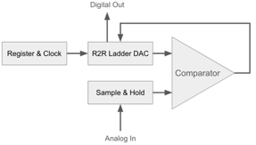
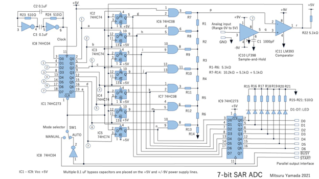
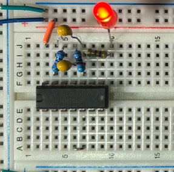
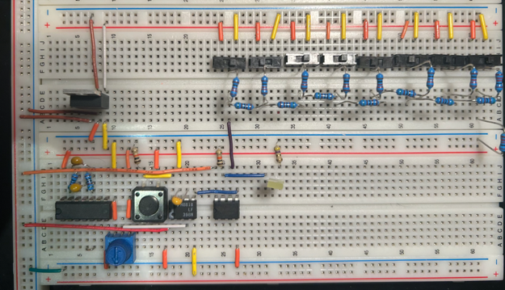
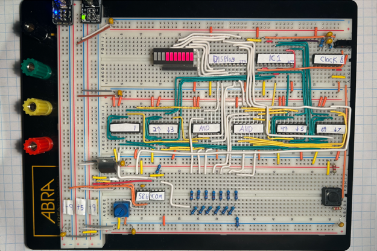
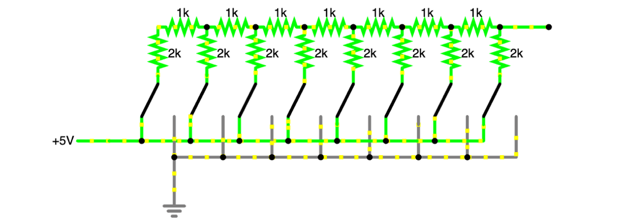
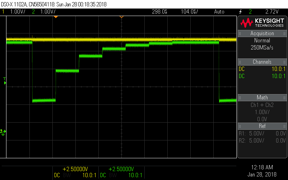
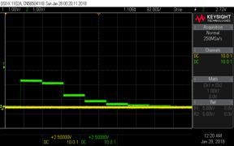

2025 · Analog & Mixed Signal · Digital Logic
Successive Approximation Register ADC
A mixed-signal project that builds a successive approximation analog-to-digital converter using clocked digital logic, an R/2R DAC, comparator feedback, and oscilloscope validation.

Video Demonstration
Measured conversion behavior
The demonstration shows the circuit operating as a physical build, with the measured conversion behavior visible during testing.
 ▶ Watch on YouTube
▶ Watch on YouTube
Engineering Challenge
Convert an analog voltage into a digital representation.
The goal of an ADC is to take a continuously varying voltage and produce a digital value that represents it. A successive approximation ADC does this by testing one digital bit at a time and comparing the analog equivalent of that guess against the input voltage.
This project is valuable because it sits between analog electronics and digital logic. The circuit needs an analog comparator, a digital register sequence, a DAC estimate, and a clocked decision process to work together.
Core conversion loop:
- Try a digital estimate.
- Convert that estimate back into analog voltage using the R/2R DAC.
- Compare the DAC output to the unknown input voltage.
- Keep or reject the bit and move to the next one.
System Overview
The ADC as a feedback system
The SAR ADC operates as a closed feedback loop. A register proposes a digital value, the R/2R ladder converts that value into an analog voltage, and the comparator determines whether the estimate is above or below the input signal.
The diagrams below show the relationship between the register, DAC, comparator, and clocked control logic.


Prototype & Circuit Build
Building the ADC in stages
The circuit was not just one simple breadboard. It was built from multiple functional stages, including clock/control logic, a DAC ladder, comparator feedback, and the final assembled ADC circuit.
Because these images are breadboard/final-build evidence, they do not need long explanations underneath every photo. The surrounding text explains why the build progression matters.



R/2R DAC
Turning a digital guess into an analog voltage
The R/2R ladder is central to the SAR process because it converts the current digital guess into an analog voltage. The comparator can then decide whether that analog estimate is above or below the unknown input voltage.
This is what makes the project mixed-signal: the digital part proposes binary values, while the analog part evaluates the voltage consequences of those values.

Why it matters: without the DAC stage, the digital register would have no way to compare its guess to the analog input.
The ladder acts as the bridge between the digital and analog halves of the converter.
Oscilloscope Validation
Checking the circuit with measurements
The oscilloscope captures are important because they show that the circuit behavior was measured, not just described. The stepped behavior is consistent with a SAR-style process: the DAC estimate changes as the register tests successive bits.
These images should appear next to the explanation of validation because they are evidence of measured circuit behavior.


Key Takeaways
- Connected analog voltage comparison to digital register logic.
- Used an R/2R DAC as the analog estimate inside the conversion loop.
- Validated circuit behavior using oscilloscope readings.
- Built experience with mixed-signal systems where analog and digital subsystems depend on each other.